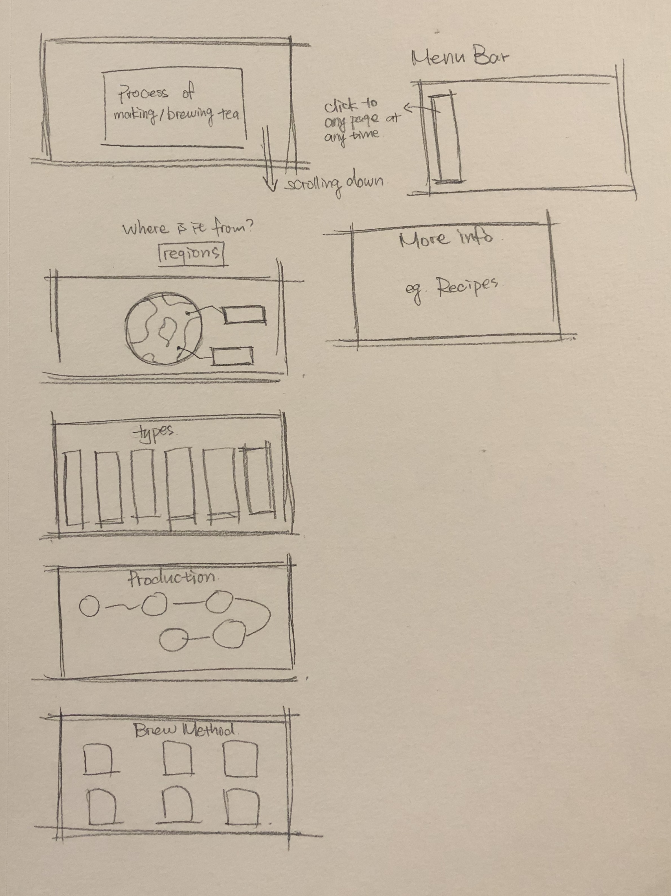

Ideation Sketches
For this project, I want to design a website not simply shows the information of different teas, but also help people to better understand tea and its background. So, I will make my website more like a process to lead users know its origin, kind, how it is produced, how to brew them, and maybe some recipes about how to cook with the tea.
